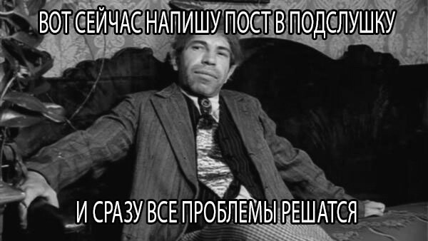

ЛУЧШИЕ МЕМЫ ДВФУ
Отборный юмор прямиком из "Подслушано ДВФУ"
САМЫЕ ПОПУЛЯРНЫЕ АНЕКДОТЫ В ДВФУ
Студент ДВФУ говорит: 'Мы так много учимся, что наше университетское время можно назвать не иначе как 'Игра престолов: битва за диплом'! |
Студент ДВФУ спрашивает у преподавателя: 'Почему наш университет такой популярный?' Преподаватель отвечает: 'Потому что мы всегда на волне! |
Студент ДВФУ говорит: 'Наши экзамены так строгие, что даже калькуляторы приходят на них вспотевшими, зная, что их ждет!' |
Когда сложно определиться с выбором покупки на Алиэкспресс, выбираю того продавца, у которого больше покупателей из Израиля. |
Студенты Дальневосточного федерального университета обсуждают, что чаще всего можно услышать в университетских коридорах. Один говорит: - "Что за лекция сегодня в 8 утра?" Другой отвечает: - "Наверное, это лекция "Искусство выживания: как прожить четверг без сна". |
- Иванов, скажи, что такое кризис? - Кризис - это когда у преподавателя остаются только два варианта ответа на твой вопрос - "не знаю" или "давай посмотрим в учебнике". |